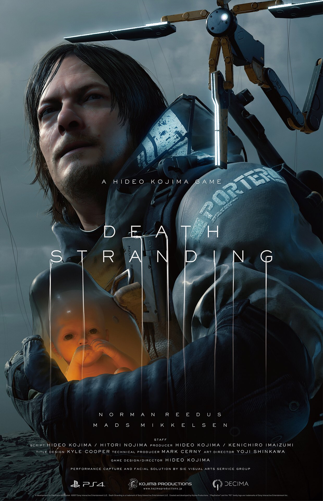

无论从何种角度来看，《死亡搁浅》都算不上是一部典型的游戏，但它却是一部典型的小岛作品。 游戏中有着错综复杂而又引人深思的剧情，越往后看就越让人拍案叫绝。 游戏模糊了单机与联机的边界，通过重建美国这个母题，让全世界玩家都被连接在一起。

这是一个关于互相连接彼此为主旨的游戏
死亡搁浅其实是地球的自清洁机制，每数万年就会发生，造成大灭绝。
主要通过诞生一个连接着冥滩的死者世界和现实的生者世界的个体，
来将搁浅在冥滩的灵魂物质，以BT的形式返回人间，
从而导致一场又一场的虚空噬灭大爆炸。最终引发物种大灭绝。
而第六次大灭绝的灭绝体就是亚美莉。
诞生后她就在冥滩的梦境中，看到了几万年或者几十万年的大灭绝，
无法忍受独自等待灭绝到来的她，利用人间的肉体总统，启动布里吉斯婴儿计划，
利用克里福的儿子山姆，连接冥滩加速灭绝。
但克里福临终前的举动，让亚美莉产生了恻隐之心。
她在冥滩上弥合了山姆的伤口，将其遣返人间复活。
复活后的山姆，被亚美莉的肉体总统领养长大。
而始终无法忍受彻骨孤独的亚美莉，谎称自己被希格斯劫持。
让山姆以拯救自己为由，搭建开罗尔网络，试图瞬间灭绝网络覆盖下的所有生物。
亚美莉想要通过加速大灭绝，提前结束无休无止等待宿命到来的痛苦。
但在山姆搭建开罗尔网络，连接美国，拯救人类的过程中，
亚美莉目睹了生物为了种族延续而进行的种种努力，这感动了亚美莉。
于是她让山姆选择，放手不管让世界毁灭，或者杀了她，暂时延缓大灭绝。
但是山姆放下了枪，
亚美莉被深深感动，决定不再加速大灭绝，
而是一个人独自关闭了冥滩，独自一人孤独地等待几万年后的大灭绝的发生。
埃及人认为人由两种物质构成，一种是“赫”即肉体，
一种是“卡”即灵魂。
“赫”属于人间，而“卡”属于亡者的世界。两者通过特殊的枢纽，链接彼此。
最后的最后，地球会挂掉，太阳会爆炸，宇宙在变冷，到最后什么都无所谓，
你越能及早抽身，就越能承受越多的事实。
但当你聚焦于地球，聚焦于一个家庭，
聚焦于一个人或是某一段经历，你看的却是一切都很重要！
因为死亡搁浅引起亡者无法前往死者的世界，带着强烈的痛苦和挣扎的“卡”通过冥滩返回到人间。已死亡的亡者搁浅在了冥滩，在遇到路过的人类时，会渴望与其沟通，建立连接，以返回人间，但结果往往是将人类拖入冥滩，导致虚空嗜灭的发生。
人类死亡之后都需要从冥滩进入亡者的世界，冥滩是链接生者世界与死者世界的桥梁，是物质与反物质的中间地带。每个人都拥有自己的冥滩，其具体的形象会根据死者强烈的主观愿望而改变。
开罗尔物质，又称手性物质。手性是一种化学名词，拥有类似的结构却镜像对称。
开罗尔物质是冥滩的产物，是一种物质，也是一种影响物质的能量，一种可以入侵生物的病毒。
BB是母体脑死亡且尚未发育完全的婴儿，这个时期的婴儿既开始产生意识，来到生者的世界，又无法离开母体存活，也属于亡者的世界，所以可以通过改造，使其帮助人类通过仪器感应到BT。
开罗尔物质会随着大气流动升入空中，附着在云层上，就会导致时间雨。受到开罗尔物质的影响，雨水接触的物质都会迅速老化，人类的电磁通信技术也因为开罗尔云层和时间雨而几乎被阻绝。
每个人死亡之后都需要通过冥滩的那一片海洋前往亡者的世界，迎接来世。而如今这条本该载着“卡”前往来世的船却在冥滩搁浅了，死者不能前往亡者的世界，只能游荡在冥滩，与生者的世界相连，成为了BT。
亡者的世界与生者的世界是反物资与物质组成的世界，当BT强行将人类拉进亡者的世界时，物质与反物质接触就会产生巨大的爆炸，吞噬周围所有的地形与建筑。